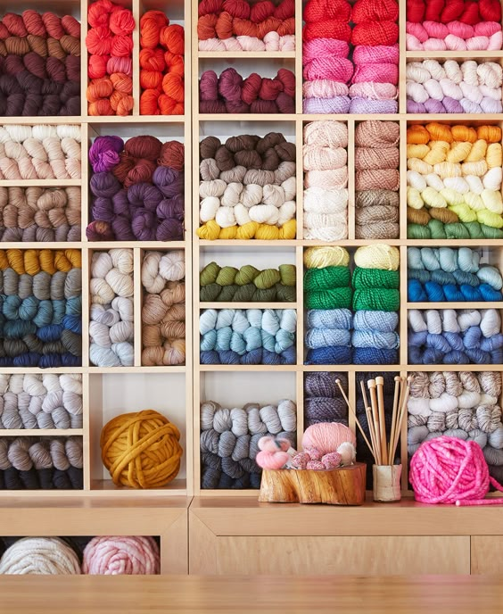
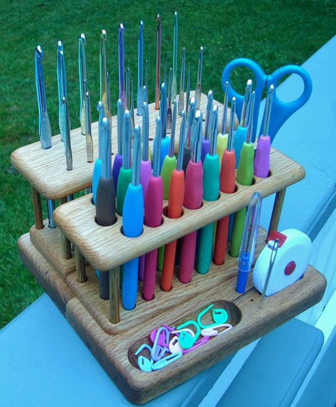
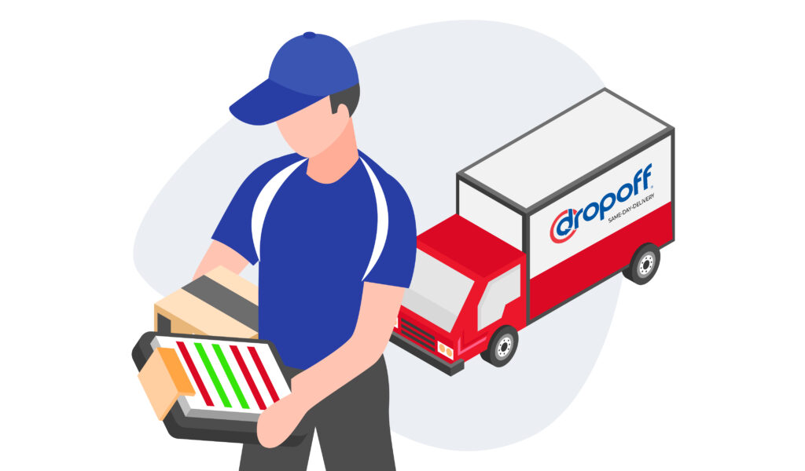

Products and Services
Premium Yarns
Crochet Hooks
Fiber Fill Stuffing

Delivery Service
Accessories

About Us

At Yarn Direct, we are dedicated to providing high-quality crochet supplies delivered right to your door. Our mission is to enhance your crafting experience by offering a wide range of crochet materials while ensuring convenience and exceptional customer service.
Our business model leverages proven methods of offering products and services without dramatically altering consumer behavior or industry dynamics. This model is particularly suited to our business idea for several reasons:
- Established Market Structure: Selling crochet materials online with delivery fits into a traditional retail model, akin to established platforms like Etsy and Amazon. Consumers are accustomed to purchasing crafting supplies online, and we tap into this existing expectation by offering convenience.
- Efficient Value Delivery: By consistently delivering high-quality products and reliable service, we ensure customer satisfaction. Yarn Direct focuses on delivering value through a seamless e-commerce experience.
- Predictable Growth Path: Our business can scale predictably through expanded product offerings and enhanced logistics, much like traditional retail models. Our delivery service adds convenience while aligning with standard practices familiar to consumers.
The crochet industry in Barbados is experiencing rapid growth, fueled by increasing consumer interest in learning to crochet or purchasing crochet clothing and accessories. As more small crochet businesses emerge and this interest grows, the demand for high-quality yarn and tools continues to rise. Yarn Direct's focus on high-quality crochet supplies, caters to both new and experienced crocheters.


Positioned as an online e-commerce business with efficient delivery services, Yarn Direct diminishes the forces that can affect profitability, ensuring a unique place in the market.
Competitive Comparison
| Feature | Yarn Direct | Laurie Dash & Sons Inc. | Woolworth | Didiers | Top Fabrics |
|---|---|---|---|---|---|
| Pricing | Moderate | Moderate | Low | Moderate | Moderate |
| Product Range | Wide | Wide | Small | Wide | Wide |
| Delivery Option | Yes | No | Yes | No | No |
| Online Sales Channel | Yes | No | Yes | No | No |
Contact Us
 +1 (246) 420-2169
+1 (246) 420-2169